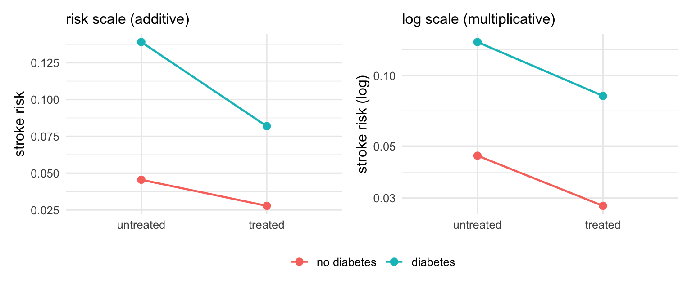
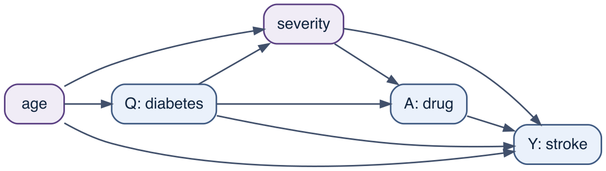
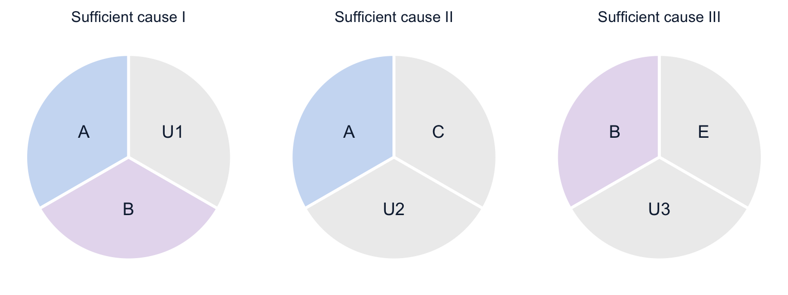

Every causal estimate so far has reported one number for the drug’s effect, as though the drug did the same thing to everyone. It does not. The drug averts more strokes in some patients than in others, and when that variation lines up with a measured characteristic — here, whether the patient has diabetes — we can describe it. That description is the subject of this chapter, together with a complication that catches most people once: whether the effect “varies” at all depends on the scale it is measured on. The same drug, in the same cohort, shows a large interaction with diabetes on one scale and none on another. Neither answer is wrong; they are answers to different questions, and a great deal of confusion comes from not saying which one is being asked. The previous chapter, Chapter 16, met one such interaction, between the drug and blood pressure, and could only name it; here interaction is the object itself.
Three notions travel under the word “interaction,” and the chapter keeps them apart: effect modification (the effect of one treatment varies across strata of a second variable), interaction (the joint effect of intervening on two treatments), and sufficient-cause or biologic interaction (two factors are components of a common causal mechanism). They have different definitions, different identification requirements, and different uses.
17.1 The effect is not one number
Because the cohort’s data-generating process is known, the drug’s true causal effect can be read off within each diabetes stratum by comparing the potential-outcome risks risk1 and risk0 of the patients in that stratum.
Table 17.1: The drug’s true effect, within strata of diabetes.
diabetes
risk0
risk1
RD
RR
0
0.0455
0.0278
-0.0177
0.6110
1
0.1391
0.0819
-0.0572
0.5889
Read the two scales across the rows of Table 17.1. On the risk-difference scale the drug averts 18 strokes per thousand among patients without diabetes and 57 per thousand among patients with diabetes — roughly 3.2 times as many. On the risk-ratio scale the two numbers are close, 0.611 and 0.589: the drug cuts stroke risk by about the same fraction in both groups. So the drug’s effect varies strongly across diabetes on one scale (the difference of risk differences is -0.0395) and only slightly on the other (the ratio of risk ratios is 0.964, close to one).
17.2 Interaction is a property of the scale
This is not a contradiction; it is arithmetic. The drug multiplies a patient’s stroke risk by a roughly constant factor — the risk ratio — whatever their starting risk. Diabetes raises the starting risk: untreated, the diabetic patients run a risk of 0.139 against 0.045 for the others, about 3.1 times higher. A constant multiplicative cut applied to a larger baseline removes a larger absolute amount. With \(\text{risk}(1) = \text{RR} \times \text{risk}(0)\), the risk difference is \(\text{risk}(0)\,(\text{RR} - 1)\) — proportional to the baseline risk. So a constant risk ratio forces the risk difference to track the baseline, and the additive interaction appears the moment a second factor moves the baseline. The figure shows the same four risks on the two scales.

Figure 17.1: The same four counterfactual risks on two scales. On the risk (additive) scale the diabetes line falls more steeply from untreated to treated than the no-diabetes line: the risk differences are unequal, so there is additive interaction. On the log (multiplicative) scale the two lines are parallel: the risk ratios are equal, so there is no multiplicative interaction. One picture, two verdicts, depending only on the axis.
There is a consequence worth stating plainly: when both factors affect the outcome, it is generally impossible to have no interaction on both scales at once. If the risks combine multiplicatively (no multiplicative interaction), then on the additive scale they cannot also combine additively, and the reverse. Absence of interaction is not a property of the world that one can discover; it is a property of the world relative to a scale. The question is never “is there interaction?” but “on which scale, and which scale answers my question?”
17.3 What a regression reports depends on its link
A model does not escape the scale problem; it embeds a choice of scale in its link function, and reports interaction on that scale only. Fit a single log-link model with a treatment-by-diabetes product term.
priors_out <-c(prior(normal(-3, 1), class ="Intercept"), # log baseline riskprior(normal(0, 0.5), class ="b")) # log risk ratiosm_b <-brm(stroke ~ drug * diabetes + severity + age_c,family =poisson(), data = df, prior = priors_out,chains =4, iter =800, warmup =400, seed =1,file ="models/ch16_mult", file_refit ="on_change")m <-glm(stroke ~ drug * diabetes + severity + age_c, family = poisson, data = df)
The product term’s posterior is centred at 0.041, with a 95% credible interval from -0.132 to 0.213, and the maximum-likelihood fit agrees: on the model’s native multiplicative scale there is no appreciable interaction, matching the near-constant risk ratio. But the same fitted model shows the additive interaction clearly once its predictions are standardised within each diabetes stratum — the g-computation of Chapter 13, run separately for the two groups with avg_comparisons(by = "diabetes"), in the reporting convention Chapter 16 stated.
rd_by <-avg_comparisons(m_b, variables ="drug", by ="diabetes") # standardised within stratumrd_by[, c("diabetes", "estimate", "conf.low", "conf.high")]
The standardised risk differences, -0.0181 and -0.0491, track the stratified truth of Table 17.1 (-0.0177 and -0.0572; both credible intervals cover it), and their difference is the additive interaction. One model, fitted once, gives “no interaction” on the scale of its coefficients and “clear interaction” on the scale of its predictions. A logistic or Poisson model that reports no significant product term has established nothing about the additive scale, which is the one a decision-maker usually needs. The recommendation in the methodological literature is therefore to report interaction on both scales explicitly, with the stratum-specific effects, rather than leaning on a single product-term coefficient.1
One tempting shortcut fails: switching to a linear-probability model and reading its product term as the additive interaction. Under a non-linear truth that model is misspecified, and its product term can mislead in size and even in sign. The reliable route to the additive interaction is to standardise a well-fitting model, on the scale you care about, as above.
17.4 Effect modification versus interaction
So far we have said the drug’s effect “varies across diabetes.” That is effect modification: the causal effect of one treatment — the drug — differs across strata of a second variable — diabetes.2 Nothing in it requires that the second variable be a treatment one could assign. Diabetes modifies the drug’s effect in the sense that the drug’s effect is distributed unevenly across diabetic status, and that is a fact about the drug, not a claim about intervening on diabetes.
Interaction is a stronger statement: it concerns the joint effect of intervening on two treatments, \(E[Y(a, q)]\) as both \(a\) and \(q\) are set. It is symmetric — the extent to which diabetes modifies the drug’s effect equals, on a given scale, the extent to which the drug modifies diabetes’s effect — and it requires both factors to be well-defined interventions, with consistency and exchangeability for each.
The distinction has teeth in this cohort. To claim effect modification of the drug’s effect by diabetes, we need the drug to be unconfounded within diabetes strata — which holds here, because treatment is assigned at random given its confounders (age, severity and diabetes itself). To claim a drug-by-diabetes interaction, we would additionally need diabetes itself to be unconfounded, and it is not: age causes both diabetes and stroke, so the diabetes-stroke relationship is confounded. And severity and blood pressure, which also drive stroke, are caused by diabetes rather than confounders of it — they lie on the pathways from diabetes to stroke — so they cannot simply be adjusted away to rescue a diabetes effect.

Figure 17.2: Why the cohort supports a claim of effect modification but not of interaction. The drug’s confounders - age, severity and diabetes - all point into both the drug and stroke, so the drug’s effect within diabetes strata is identified and effect modification is defensible. Diabetes’s own effect is not so clean: age causes both diabetes and stroke (confounding), while severity lies on the path from diabetes to stroke (a mediator, not a confounder). Together with the fact that intervening on diabetes is barely a well-defined action, this puts a symmetric drug-by-diabetes interaction out of reach even though the effect modification is not.
Adjusting for the confounders of diabetes might in principle identify the interaction, but a deeper obstacle remains: “setting” diabetes is not a well-defined intervention in the way “prescribing the drug” is, so the counterfactual \(Y(a, q)\) that interaction needs is on shaky ground (the consistency assumption of Chapter 11, and the firewall of Chapter 4). This is why the cohort’s result is reported as effect modification of the drug’s effect by diabetes — a defensible claim — rather than as a drug-by-diabetes interaction. The requirements are not the same: effect modification needs the drug’s effect to be identified within strata of the second variable, whereas interaction needs the joint effect of intervening on both to be identified. Because these are different conditions, each can hold without the other — there are even settings where one can assess interaction but not effect modification — and the two notions coincide only under particular conditions.3
17.5 What a DAG cannot show
The DAG of Chapter 12 decides which variables to adjust for. It is silent about the subject of this chapter: how causes combine. An arrow records that a cause acts; it says nothing about the shape of that action. The point deserves a demonstration, because it is the limit of a DAG most often forgotten in practice.
Take the simplest case: an exposure A and a second cause V of the outcome Y, both randomised so there is no confounding at all. The DAG is A → Y ← V and nothing more. Now build two different worlds on that one diagram: in the first, A lowers risk by the same amount whatever V; in the second, A helps only when V = 0.
set.seed(11); n <-40000V <-rbinom(n, 1, 0.5); A <-rbinom(n, 1, 0.5) # A -> Y <- V, with A independent of Vbase <-0.30+0.20* V # outcome risk with no treatmentY_const <-rbinom(n, 1, base -0.10* A) # A helps everyone equallyY_modif <-rbinom(n, 1, base -0.20* A * (V ==0)) # A helps only when V = 0rd <-function(Y, v) mean(Y[A ==1& V == v]) -mean(Y[A ==0& V == v])c(const_V0 =rd(Y_const, 0), const_V1 =rd(Y_const, 1),modif_V0 =rd(Y_modif, 0), modif_V1 =rd(Y_modif, 1))
Both data sets come from the same graph and license the same adjustment set (here, none). Yet in the first world the risk difference is about -0.09 whether or not V is present; in the second it is -0.2 when V = 0 and 0 when V = 1. The drug is worth giving to everyone, or only to half the patients, and the DAG cannot tell you which: effect modification is a property of the functional form of the structural equation, not of the topology of the arrows.
This is a limitation and a feature at once.
As a limitation, effect modification, dose-response, thresholds and synergy cannot be read off a DAG. Two analysts who agree on every arrow may still disagree about whether the effect is uniform, and they must settle it with a model (an interaction term, a stratified estimate), not with the picture. And, as the first sections of this chapter showed, whether interaction is even present can change with the scale, on which the graph is mute.
As a feature, because the graph commits to no functional form, its verdicts about confounding and adjustment hold whatever that form turns out to be. d-separation holds no matter how A and V combine to make Y. The DAG answers “which variables?” because it refuses to answer “how much, and in what shape?”
Two specialised diagrams reach past this limit when they are needed. Single-world intervention graphs (SWIGs, the callout of Chapter 12) splice the intervention into the graph to make counterfactual independencies explicit. The sufficient-component-cause diagrams of the next section represent mechanistic interaction, two factors co-participating in one sufficient cause, which is a different idea from statistical interaction and one a DAG was never built to carry.
17.6 Which scale matters: decisions versus mechanism
If interaction is scale-relative, which scale should be reported? The answer depends on the purpose.
For decisions and public health, the additive scale. The risk difference is the number of events prevented per person treated, so it is what determines where a scarce treatment does the most good. In the cohort the drug prevents about 57 strokes per thousand diabetic patients against 18 per thousand without diabetes; a programme that could treat only some patients should start with the diabetics, even though the risk ratio is identical across the two groups. A constant risk ratio is portable across populations with different baseline risks, which is why models report it, but portability is not the same as decision relevance, and reporting only the ratio hides the additive interaction that the allocation decision turns on.
For mechanism, the relevant frame is Rothman’s sufficient-component-cause model, and it points to the same scale. Two factors combine mechanistically when they are joint components of one sufficient cause — a property of counterfactual response types, not of an effect measure — and under a monotonicity assumption (neither factor prevents the outcome in anyone; instruments use the word in a different sense, Chapter 18) this appears in the data as a departure from additivity, not multiplicativity. So the additive scale is preferred on both counts, for decisions and for mechanism, and the multiplicative scale, convenient as it is for modelling, is the one that most often misleads when read as a statement about how two causes combine. The box below sets out the model; Figure 17.3 shows the idea.

Figure 17.3: Rothman’s sufficient-component-cause model. Each disc is one sufficient cause - a minimal set of component causes that, once all present, produces the outcome. Factor A is a component of sufficient causes I and II, so it acts through two distinct mechanisms; B is a component of I and III. In sufficient cause I the components A and B occur together, so an individual carrying that cause develops the outcome only if both A and B are present: this co-occurrence in one disc is what sufficient-cause (biologic) interaction between A and B means. The shaded U components are the unmeasured causes that complete each mechanism.
Rothman’s sufficient-component-cause model
The mechanistic reading of interaction has its own framework, set out by Rothman.4 A sufficient cause is a minimal set of conditions that, once all are present, produce the outcome; each condition in the set is a component cause. Most outcomes have several sufficient causes, and a factor may be a component of more than one (Figure 17.3).
Two factors show sufficient-cause interaction — the mechanistic sense of “biologic” interaction — when a single sufficient cause contains both: when there exist individuals who develop the outcome if both factors are present but not if either is removed (sufficient cause I in the figure). This is a claim about which counterfactual response types exist in the population, not about how two risks divide on a chosen scale.
The bridge from that claim to the estimated effects runs through the additive scale. Under a monotonicity assumption — no factor prevents the outcome in any individual — a super-additive risk (one factor’s risk difference larger when the second is present) implies that synergistic response types exist; a departure from multiplicativity implies nothing of the kind.5 This is the basis for tying mechanistic synergism to departure from additive, not multiplicative, risk.6
The implication runs one way, and only when its premises hold. For two factors that are genuine, well-defined interventions with monotone effects, super-additivity is sufficient to infer that synergistic response types exist — that is the theorem. It is not necessary: masking by other response types can leave a real synergism additive or even sub-additive, so additivity does not rule synergism out. And the sufficiency lapses when the premises fail — for a non-manipulable, confounded marker such as diabetes the observed super-additivity is not a contrast of joint interventions at all, so it says nothing about mechanism, as the next paragraph shows.
A regression form for the mechanism. The model of the callout can be written as a regression. Suppose two binary factors \(A\) and \(B\) are components of one sufficient cause, and that neither is a component of any sufficient cause acting without the other. Then, writing \(p_0\) for the risk from mechanisms involving neither and \(p_1\) for the risk from the shared mechanism, the risk is \(p_0 + p_1 ab\): an interaction-only model on the risk-difference scale, with an intercept and no main effects. The structural zeros are unambiguous, because \(a = 0\) means the factor is absent. The additive interaction contrast is then \(p_{11} - p_{10} - p_{01} + p_{00} = p_1\), which is why the mechanistic question is tied to departure from additivity and not from multiplicativity. Two qualifications carry over from the callout: the implication requires monotonicity – neither factor prevents the outcome in anyone – and it runs one way only, since other response types can mask a real synergism and leave the risks additive.7 A pure product term is thus a strong mechanistic hypothesis, not a simplification, and it is a hypothesis about a particular scale; Chapter 24 sets out when a regression may omit its main effects in general.
A caution closes the loop with the book’s firewall (Chapter 4). The additive interaction by diabetes in this cohort is produced by a baseline shift — diabetes raises the starting risk, and a near-constant relative effect then averts more in absolute terms. That is a real, decision-relevant interaction, but it is not evidence of a shared biological mechanism between the drug and diabetes: no drug-diabetes synergistic response type was built into the cohort, only a higher baseline. (The drug does interact with blood pressure — the exposure-mediator interaction of Chapter 16 — and because diabetes shifts blood pressure, a little of that leaks onto the multiplicative scale as the ratio of risk ratios 0.964 rather than exactly one; it does not create a drug-diabetes response-type synergism.) Sufficient-cause interaction is a counterfactual construct like the rest of this book’s machinery, and a statistical departure from additivity is consistent with it but does not demonstrate the molecular story the word “biologic” invites. Mediation and interaction are, in the end, two views of one object; the section below makes the connection precise, decomposing the drug’s effect into a part due to neither, a part due to interaction alone, a part due to mediation alone, and a part due to both.
17.7 The case-only design: interaction on one scale only
One design estimates an interaction and nothing else, and it estimates it on the multiplicative scale alone. In a case-only gene–environment study the main effects genuinely cannot be estimated: among cases only there are no non-cases to compare with, so neither the effect of the genotype nor that of the exposure is identified. What remains identified is their interaction. If genotype \(G\) and exposure \(E\) are independent in the source population and the disease is rare, the \(G\)–\(E\) association among cases estimates the multiplicative interaction, and does so with better precision than the full case–control analysis. This is the setting for which non-hierarchical logistic models, models with an interaction and no main effects, were first argued to make sense biologically.8 (Chapter 24 sets out when such a model is a reparameterisation and when it is a restriction; here the main effects are simply not identified.)
estimate 2.5 % 97.5 % truth
1.098 1.006 1.189 1.099
A logistic regression of genotype on exposure, fitted in the 9342 cases and ignoring everyone else, recovers the multiplicative interaction: 3.00 against a true ratio of odds ratios of 3.
The design is efficient and strongly assumption-dependent, and the assumption that matters is \(G \perp E\) in the source population. Any real association between the two is added to the estimate, and nothing in the case-only data can detect it:
The estimate, 4.65 on the odds-ratio scale, has moved toward the product 4.8 of the interaction and the source association, and the case-only data cannot separate the two contributions. The assumption is testable only in controls, or in an external sample of the source population — an argument for collecting controls even when the case-only estimator is the one you intend to report.
A concrete instance. In the Spanish Bladder Cancer Study and the meta-analyses published with it, case-only meta-analyses supported an interaction between NAT2 slow acetylation and cigarette smoking in bladder cancer (p for interaction 0.009), while the GSTM1 association was not modified by smoking status.9 Independence of genotype and smoking behaviour in the source population is plausible for a detoxification genotype and less plausible for genotypes in the nicotine-metabolism pathway, which are associated with smoking intensity: the design’s validity turns on which gene is being studied, not on the design alone.
What the design returns is a ratio of odds ratios: multiplicative interaction, and nothing else. Nothing in the case-only data can speak to additive interaction, which is the scale the decisions of the previous section turn on, nor to the baseline risks that an additive contrast needs. It is the clearest instance in the book of an analysis that fixes the scale of “interaction” before any data are seen.
17.8 Unifying mediation and interaction: the four-way decomposition
The mediation chapter, Chapter 16, split the drug’s total effect on stroke into a natural direct and a natural indirect effect, and found the split was not unique: because the drug and blood pressure interact, the two decompositions disagreed. That interaction is the subject of this chapter, and it can be given lines of its own. VanderWeele’s four-way decomposition separates the total effect into four additive pieces:10 a part due to neither mediation nor interaction, a part due to interaction alone, a part due to mediation alone, and a part due to both.
Write \(A\) for the drug, \(M\) for blood pressure, and fix a reference blood pressure \(m^{*}\). The four pieces are the controlled direct effect at \(m^{*}\) (neither), a reference interaction (interaction alone), a mediated interaction (both), and a pure indirect effect (mediation alone): \[
\text{TE} \;=\; \underbrace{\text{CDE}(m^{*})}_{\text{neither}}
\;+\; \underbrace{\text{INT}_{\text{ref}}}_{\text{interaction only}}
\;+\; \underbrace{\text{INT}_{\text{med}}}_{\text{both}}
\;+\; \underbrace{\text{PIE}}_{\text{mediation only}} .
\] This refines Chapter 16’s two-way split rather than replacing it. The natural direct effect is \(\text{CDE}(m^{*}) + \text{INT}_{\text{ref}}\) and the natural indirect effect is \(\text{INT}_{\text{med}} + \text{PIE}\), so the interaction that Chapter 16 had to fold into the direct and indirect effects is now shown on two lines of its own.
The pieces are computed by the same posterior g-computation as the mediation chapter, reusing its mediator and outcome fits. The only new quantities are the two controlled worlds \(Y(1, m^{*})\) and \(Y(0, m^{*})\), in which blood pressure is held at the reference \(m^{*}\) for everyone; the other four worlds are the natural ones Chapter 16 already built.
The mediator and outcome fits of the mediation chapter, read back from their model files
## Same formulas, priors and data as in the mediation chapter, so brm() reads the cached## fits from models/ch15_med and models/ch15_out instead of sampling again.df$sbp10 <- (df$sbp -140) /10# blood pressure, centred (per 10 mmHg)priors_med <-c(prior(normal(0, 2), class ="Intercept"),prior(normal(0, 1), class ="b"))m_med <-brm(sbp10 ~ drug + severity + age_c + diabetes, # mediator law of motionfamily =gaussian(), data = df, prior = priors_med,chains =4, iter =800, warmup =400, seed =1,file ="models/ch15_med", file_refit ="on_change")m_out <-brm(stroke ~ drug * sbp10 + severity + age_c + diabetes, # outcome, with interactionfamily =poisson(), data = df, prior = priors_out,chains =4, iter =800, warmup =400, seed =1,file ="models/ch15_out", file_refit ="on_change")
fourway <-function(med, out, mstar, n_draws =200, seed =1) {set.seed(seed) mid <-sort(sample.int(brms::ndraws(med), n_draws)) oid <-sort(sample.int(brms::ndraws(out), n_draws)) M0 <-posterior_predict(med, transform(df, drug =0), draw_ids = mid) # mediator | no drug M1 <-posterior_predict(med, transform(df, drug =1), draw_ids = mid) # mediator | drug world <-function(a, M) vapply(seq_len(n_draws), function(s) # E[Y(a, M)]mean(posterior_epred(out, transform(df, drug = a, sbp10 = M[s, ]),draw_ids = oid[s])), numeric(1)) ctrl <-function(a, m) vapply(seq_len(n_draws), function(s) # E[Y(a, m*)]mean(posterior_epred(out, transform(df, drug = a, sbp10 = m),draw_ids = oid[s])), numeric(1)) EY00 <-world(0, M0); EY11 <-world(1, M1) EY10 <-world(1, M0); EY01 <-world(0, M1) EY1c <-ctrl(1, mstar); EY0c <-ctrl(0, mstar)tibble(CDE = EY1c - EY0c, # neither: controlled direct at m*INT_ref = (EY10 - EY00) - (EY1c - EY0c), # interaction onlyINT_med = (EY11 - EY01) - (EY10 - EY00), # bothPIE = EY01 - EY00, # mediation onlytotal = EY11 - EY00)}fw <-fourway(m_med, m_out, mstar =0) # reference m* = 140 mmHgfw2 <-fourway(m_med, m_out, mstar =mean((o$sbp0 -140) /10)) # reference = mean untreated
Table 17.2: Four-way decomposition of the drug’s effect on stroke, additive scale.
component
risk difference (95% CrI)
neither (controlled direct, m* = 140 mmHg)
-0.0116 (-0.0175, -0.0060)
interaction only (reference interaction)
-0.0097 (-0.0175, -0.0029)
both (mediated interaction)
0.0081 (0.0026, 0.0144)
mediation only (pure indirect)
-0.0153 (-0.0201, -0.0101)
total effect
-0.0283 (-0.0352, -0.0220)
The four components (Table 17.2) sum to the total effect, -0.0283, as they must, and they line up with Chapter 16: the controlled-direct and reference-interaction components add to the natural direct effect (-0.0212), and the mediated-interaction and pure-indirect components add to the natural indirect effect (-0.0071). The four-way decomposition does not overturn the two-way split; it takes the interaction that Chapter 16 had to bury inside the direct and indirect effects and gives it a place of its own.
The both component — the mediated interaction, 0.0081, with a 95% credible interval excluding zero — is the exposure-mediator interaction itself, and it is the difference between Chapter 16’s two indirect effects, the quantity that made the split there non-unique. Its sign is worth reading: it is positive while the drug’s total effect is protective, because the drug flattens the blood-pressure-to-stroke slope, so the pressure reduction the drug produces buys less protection than the same reduction would with the drug absent. On the additive scale, the interaction works against the drug.
The neither and interaction-only components depend on the reference blood pressure \(m^{*}\), and trade off against each other as it moves. Fixing \(m^{*}\) at the population’s mean untreated pressure (145.9 mmHg) rather than at 140 mmHg moves the controlled direct effect from -0.0116 to -0.015 and the reference interaction from -0.0097 to -0.0062, while their sum — the natural direct effect — and the mediated-interaction and pure-indirect components are unchanged. This is the same reference-dependence Chapter 16 met in the controlled direct effect, now visible as a redistribution between two named components. Report the reference, or those two numbers cannot be read.
Like the diabetes interaction earlier in the chapter, the mediated interaction here is a real, decision-relevant feature of the effect measures; unlike a shared sufficient cause, it is not by itself a statement about biology. And it is defined on the additive scale — decomposed on the risk-ratio scale the four parts, and their shares, would differ. A decomposition of combined causes is a property of the scale and the reference, not of the world alone; that is the thread this chapter shares with the last.
17.9 Where this leads
Mediation and interaction complete one thread of Part IV: the effect is not one number, and how it is split — through a mediator, across a modifier, on one scale or another — is a choice that has to be named. Both chapters kept the back door closed by measurement. The next three ask what can be done when it cannot be closed. An instrument, in Chapter 18, is a variable that nudges treatment without touching the outcome, and it recovers an effect when a confounder is unmeasured at the price of a monotonicity assumption of its own, in the no-defiers sense rather than the sufficient-cause sense met here. Such variables are found in the way policies and thresholds happen to be applied, which is the subject of Chapter 19; and for every method in the book, Chapter 20 asks how wrong an unverifiable assumption would have to be before the conclusion turned over.
17.10 Key points
A treatment’s causal effect is generally not one number: it varies across patients, and when the variation aligns with a measured variable it can be described as effect modification.
Interaction is scale-dependent. A constant risk ratio across a second factor forces the risk difference to track the baseline risk, so additive interaction appears whenever the second factor shifts the baseline. When both factors have effects, there is no scale-free “no interaction”.
A regression reports interaction on its link’s scale only. A null product term in a logistic or Poisson model says nothing about the additive scale; obtain the additive interaction by standardising the fitted model within strata, and report both scales.
Effect modification (one treatment’s effect varying across a second variable) needs only that treatment to be unconfounded; interaction (joint effect of intervening on two treatments) is symmetric and needs both to be well-defined, unconfounded interventions. In the cohort, diabetes is confounded and barely manipulable, so the result is effect modification, not interaction.
The additive scale is the one relevant to decisions (events prevented) and, under monotonicity, to mechanism (sufficient-cause synergism). For two genuine, unconfounded interventions, super-additivity is sufficient to infer synergism, not necessary; for a non-manipulable marker the premises fail, so a departure from additivity does not by itself establish a mechanism.
Mediation and interaction are two views of one object. The four-way decomposition splits a total effect into parts due to neither, interaction alone, mediation alone, and both; it refines Chapter 16’s direct/indirect split, and its “both” component is the exposure-mediator interaction that made that split non-unique.
A DAG is silent about how causes combine. Two worlds with the same graph and the same adjustment set can differ in whether the effect is uniform or confined to a subgroup; effect modification lives in the functional form, which the graph omits, and that omission is why its adjustment verdicts hold whatever the form turns out to be.
The case-only design fixes the scale before any data are seen: among cases alone it estimates the multiplicative gene–environment interaction, nothing else, and only if genotype and exposure are independent in the source population, an assumption the case-only data cannot check.
17.11 Exercises
Build the divergence by hand. Take the non-diabetic stratum’s risks as given. Holding the drug’s risk ratio fixed at its non-diabetic value, compute what the diabetic stratum’s risk difference would be at a baseline risk twice, and then three times, the non-diabetic baseline. Confirm that additive interaction grows with the baseline gap while the risk ratio stays put.
Make the interaction multiplicative instead. The cohort has no drug-by-diabetes product term on the log scale. Add one to a copy of the simulation (let the drug’s log-risk effect differ by diabetes), regenerate, and recompute both interaction measures. Can you now find additive interaction with no multiplicative interaction, multiplicative with no additive, both, or neither? Which combinations are achievable?
The linear-model trap. Fit lm(stroke ~ drug * diabetes + severity + age_c) and read off the drug:diabetes coefficient. Compare it to the standardised additive interaction from the chapter. Why do they differ, and which one answers the question “does the drug avert more strokes per head among diabetics”?
Standardise to a different population. The additive interaction depends on the mix of baseline risks in the population. Recompute the drug’s overall standardised risk difference in a population that is 50% diabetic, and again in one that is 5% diabetic. Relate the change to Chapter 13’s point that an effect estimate is always an effect in a population.
Conceptual. A paper reports a logistic-regression interaction term between a drug and diabetes that is small and non-significant, and concludes “the drug works equally well in diabetics and non-diabetics.” State precisely what has and has not been shown, and what additional quantity you would ask the authors to report before accepting the clinical conclusion.
Move the reference. Recompute the four-way decomposition fixing \(m^{*}\) at 130 and then at 160 mmHg (fourway(m_med, m_out, mstar = (130 - 140)/10), and again with 160). Confirm that the controlled-direct and reference-interaction components trade off while their sum, and the mediated-interaction and pure-indirect components, stay put. Which two of the four components would a reader most easily misread if the reference blood pressure were left unstated?
Same graph, different effect. Modify the interaction demonstration so that A is harmful when V = 1 and protective when V = 0 (qualitative modification). Confirm that the DAG A → Y ← V and its adjustment set are unchanged, and that no feature of the graph distinguishes this world from the uniform-effect one. What does this imply for reporting a single number as “the effect of A”? Relate your answer to the additive-versus-multiplicative distinction of this chapter.
Knol MJ, VanderWeele TJ, “Recommendations for presenting analyses of effect modification and interaction,” Int J Epidemiol 2012;41:514-520 (DOI).↩︎
VanderWeele TJ, “On the distinction between interaction and effect modification,” Epidemiology 2009;20:863-871 (DOI).↩︎
VanderWeele TJ, “On the distinction between interaction and effect modification,” Epidemiology 2009;20:863-871 (DOI).↩︎
Rothman KJ, “Causes,” Am J Epidemiol 1976;104:587-592 (DOI).↩︎
VanderWeele TJ, Robins JM, “The identification of synergism in the sufficient-component-cause framework,” Epidemiology 2007;18:329-339 (DOI).↩︎
Blot WJ, Day NE, “Synergism and interaction: are they equivalent?,” Am J Epidemiol 1979;110:99-100 (DOI).↩︎
VanderWeele TJ, Robins JM, “The identification of synergism in the sufficient-component-cause framework,” Epidemiology 2007;18:329-339 (DOI).↩︎
Piegorsch WW, Weinberg CR, Taylor JA, “Non-hierarchical logistic models and case-only designs for assessing susceptibility in population-based case-control studies,” Stat Med 1994;13:153-162 (DOI).↩︎
García-Closas M, Malats N, Silverman D, Dosemeci M, Kogevinas M, Hein DW, Tardón A, Serra C, Carrato A, García-Closas R, Lloreta J, Castaño-Vinyals G, Yeager M, Welch R, Chanock S, Chatterjee N, Wacholder S, Samanic C, Torà M, Fernández F, Real FX, Rothman N, “NAT2 slow acetylation, GSTM1 null genotype, and risk of bladder cancer: results from the Spanish Bladder Cancer Study and meta-analyses,” Lancet 2005;366:649-659 (DOI). An earlier case-series meta-analysis of the same interaction is Marcus PM, Hayes RB, Vineis P, Garcia-Closas M, Caporaso NE, Autrup H, Branch RA, Brockmöller J, Ishizaki T, Karakaya AE, Ladero JM, Mommsen S, Okkels H, Romkes M, Roots I, Rothman N, “Cigarette smoking, N-acetyltransferase 2 acetylation status, and bladder cancer risk: a case-series meta-analysis of a gene-environment interaction,” Cancer Epidemiol Biomarkers Prev 2000;9:461-467 (PMID 10815690).↩︎
VanderWeele TJ, “A unification of mediation and interaction: a 4-way decomposition,” Epidemiology 2014;25:749-761 (DOI).↩︎